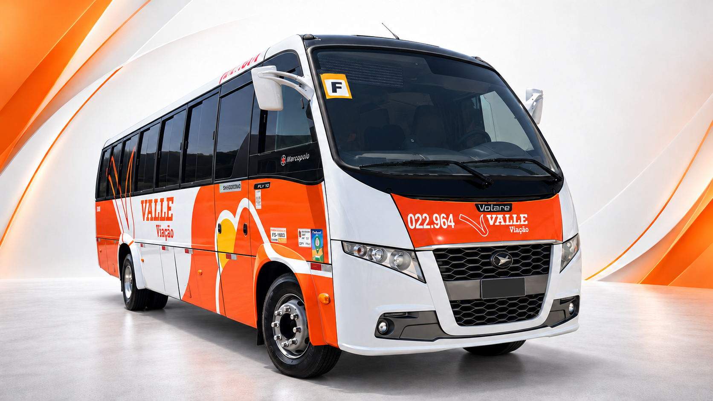

Volare Fly 10
31 passageirosO Volare Fly 10 combina espaço, conforto e versatilidade para tornar cada viagem ainda mais agradável. Com capacidade para 31 passageiros, é uma excelente opção para excursões, viagens em grupo, eventos e fretamentos empresariais. Ideal para quem procura praticidade e comodidade em trajetos de diferentes distâncias.
Solicitar cotação pelo WhatsAppConsulte a disponibilidade para a data e o trajeto da sua viagem.